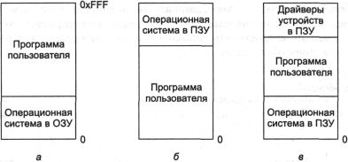
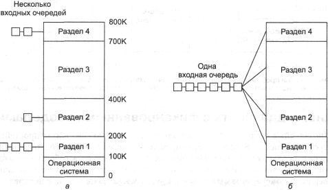
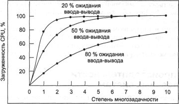
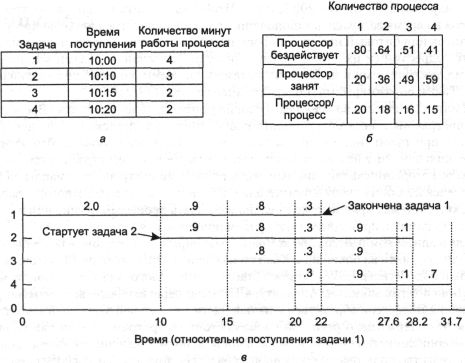

Основное управление памятью
Системы управления памятью можно разделить на два класса: перемещающие процессы
между оперативной памятью и диском во время их выполнения (то есть осуществляющие
подкачку процессов целиком (swapping) или использующие страничную подкачку (paging))
и те, которые этого не делают. Второй вариант проще, поэтому начнем с него,
а два упомянутых выше вида подкачки мы изучим позже в этой же главе. Читая главу
4, следует помнить, что обычный и постраничный варианты подкачки в значительной
степени являются искусственными процессами, вызванными отсутствием достаточного
количества оперативной памяти для одновременного хранения всех программ. Если
же когда-нибудь оперативная память настолько увеличится в размерах, что ее будет
достаточно, аргументы в пользу той или иной схемы управления памятью могут стать
устаревшими.
С другой стороны, выше уже упоминалось, что программное обеспечение растет
еще быстрее, чем память; поэтому вполне возможно, что потребность в рациональном
и эффективном управлении памятью будет существовать всегда. В 80-е годы многие
университеты использовали системы разделения времени для работы десятков (более-менее
довольных) пользователей на машинах VAX с объемом памяти 4 Мбайт. Сейчас компания
Microsoft рекомендует для индивидуальной работы в системе Windows 2000 устанавливать
на компьютер, по меньшей мере, 64 Мбайт оперативной памяти. Дальнейшее развитие
в сторону мультимедийных систем накладывает еще большие требования на память.
Таким образом, весьма вероятно, что качество управления этой частью компьтера
будет актуальным по крайней мере в течение следующего десятилетия.
Однозадачная система без подкачки на диск
Самая простая из возможных схем управления памятью заключается в том, что в
каждый конкретный момент времени работает только одна программа, при этом память
разделяется между программами и операционной системой. На рис. 4.1 показаны
три варианта такой схемы. Операционная система может находиться в нижней части
памяти, то есть в ОЗУ (оперативное запоминающее устройство, RAM (Random Access
Memory — память с произвольным доступом)) — см. рис. 4.1, а. Или же операционная
система может располагаться в самой верхней части памяти — в ПЗУ (постоянное
запоминающее устройство, ROM (Read-Only Memory — память только для чтения)),
как продемонстрировано на рис. 4.1, б. И третий способ: драйверы устройств
могут находиться наверху в ПЗУ, а остальная часть системы — в ОЗУ, расположенной
ниже, как показано на рис. 4.1, в. Первая модель раньше применялась на
мэйнфреймах и мини-компьютерах, но в настоящее время практически не употребляется.
Вторая схема сейчас используется на некоторых карманных компьютерах и встроенных
системах, а третья модель устанавливалась на ранних персональных компьютерах
(например, работающих с MS-DOS), при этом часть системы в ПЗУ носила название
BIOS (Basic Input Output System — базовая система ввода-вывода).
Когда система организована таким образом, в каждый конкретный момент времени
может работать только один процесс. Как только пользователь набирает команду,
операционная система копирует запрашиваемую программу с диска в память и выполняет
ее, а после окончания процесса выводит на экран символ приглашения и ждет новой
команды. Получив команду, она загружает новую программу в память, записывая
ее поверх предыдущей.

Рис. 4.1. Три простейшие модели организации памяти при наличии операционной
системы
и одного пользовательского процесса. Существуют также и другие возможные варианты
Многозадачность с фиксированными разделами
Однозадачные системы сложно использовать где-либо еще, кроме простейших встроенных
систем. Большинство современных систем позволяет одновременный запуск нескольких
процессов. Наличие нескольких процессов, работающих в один момент времени, означает,
что когда один процесс приостановлен в ожидании завершения операции ввода-вывода,
другой может использовать центральный процессор. Таким образом, многозадачность
увеличивает загрузку процессора. Сетевые серверы всегда имеют возможность одновременной
работы нескольких процессов (для разных клиентов), но и большинство клиентских
машин (то есть настольных компьютеров) в наши дни также имеют эту возможность.
Самый легкий способ достижения многозадачности представляет собой простое
разделение памяти на n (возможно, не равных) разделов. Такое разбиение
можно выполнить, например, вручную при запуске системы.
Когда задание поступает в память, его можно расположить во входной очереди
к наименьшему разделу, достаточно большому для того, чтобы вместить это задание.
Так как в данной схеме размер разделов неизменен, все пространство в разделе,
не используемое работающим процессом, пропадает. На рис. 4.2, а показано,
как выглядит система с фиксированными разделами и отдельными очередями входных
заданий.
Недостаток сортировки входящих работ по отдельным очередям становится очевидным,
когда к большому разделу нет очереди, в то время как к маленькому выстроилось
довольно много задач; в нашем примере на рис. 4.2, а это разделы 1 и
3.
Небольшие задания должны ждать своей очереди, чтобы попасть в память, и это
все несмотря на то, что свободна основная часть памяти. Альтернативная схема
заключается в организации одной общей очереди для всех разделов, как показано
на рис. 4.2, б: как только раздел освобождается, задачу, находящуюся
ближе всего к началу очереди и подходящую для выполнения в этом разделе, можно
загрузить в него и начать ее обработку. Поскольку нежелательно тратить большие
разделы на маленькие задачи, существует другая стратегия. Она заключается в
том, что каждый раз после освобождения раздела происходит поиск в очереди наибольшего
из помещающихся в этом разделе заданий, и именно это задание выбирается для
обработки. Заметим, что последний алгоритм дискриминирует мелкие задачи, как
недостойные того, чтобы под них отводился целый раздел, хотя обычно крайне желательно
предоставить для наименьших задач (часто интерактивных) лучшее, а не худшее
обслуживание.

Рис. 4.2. Фиксированные разделы памяти с отдельными входными очередями
для каждого раздела (а);
фиксированные разделы памяти с одной очередью на вход (б)
Выйти из положения можно, создав хотя бы один маленький раздел памяти, который
позволит выполнять мелкие задания без долгого ожидания освобождения больших
разделов.
При другом подходе устанавливается следующее правило: задачу, имеющую право
быть выбранной для обработки, можно пропустить не больше k раз. Каждый
раз, когда через нее перескакивают, к счетчику добавляется единица. Когда значение
счетчика становится равным k, игнорировать задачу более нельзя.
Подобная схема, где утром оператор задает фиксированные разделы и после этого
они не изменяются, в течение многих лет использовалась в системах OS/360 на
больших мэйнфреймах компании IBM. Она носила название MFT (Multiprogramming
with a Fixed number of Tasks — мультипрограммирование с фиксированным количеством
задач, или OS/MFT). Она легка для понимания и не менее проста в исполнении:
входящее задание стоит в очереди до тех пор, пока не станет доступным соответствующий
раздел, затем оно загружается в этот раздел памяти и там работает до завершения
процесса. Сейчас очень мало (если они вообще сохранились) операционных систем,
поддерживающих такую модель.
Моделирование многозадачности
При использовании многозадачности повышается эффективность загрузки центрального
процессора. Грубо говоря, если средний процесс выполняет вычисления только 20
% от того времени, которое он находится в памяти, то при присутствии в памяти
одновременно пяти процессов центральный процессор должен быть занят все время.
Эта схема слишком оптимистична в отличие от реальной ситуации, поскольку она
предполагает, что все пять процессов никогда не ожидают завершения операции
ввода-вывода одновременно.
Более совершенная модель рассматривает эксплуатацию центрального процессора
с точки зрения теории вероятности. Предположим, что процесс проводит часть р
своего времени в ожидании завершения операции ввода-вывода. Если в памяти находится
одновременно п процессов, вероятность того, что все п процессов
ждут ввод-вывод (в этом случае центральный процессор будет бездействовать),
равна рn. Тогда степень загрузки центрального процессора
будет выражаться формулой:
Степень загрузки центрального процессора = 1 - рn.
На рис. 4.3 показана зависимость степени использования центрального процессора
от числа п, называемого степенью многозадачности.

Рис. 4.3. Зависимость степени загрузки центрального процессора от количества
процессов в памяти
Из рисунка понятно, что если процессы проводят 80 % своего времени в ожидании
завершения операции ввода-вывода, то для того, чтобы получить потерю времени
процессора ниже 10 %, в памяти должны одновременно находиться, по меньшей мере,
10 процессов. Когда вы представляете себе, что интерактивный процесс, ожидая,
пока пользователь напечатает что-либо на терминале, находится в состоянии ожидания
ввода-вывода, должно быть ясно, что время ожидания ввода-вывода, равное 80 %
и больше, не является необычным. Но даже в системах пакетной обработки процессы,
выполняющие ввод-вывод в основном с диска, часто имеют такой же или больший
процент.
Нужно отметить, что описанная выше вероятностная модель является довольно
грубым приближением. Она неявно предполагает, что все и процессов независимы,
то есть допустима следующая ситуация: в памяти находятся пять процессов, из
них три работают, а два ждут. Но когда в системе присутствует один-единственный
центральный процессор, он не может одновременно обрабатывать три процесса, поэтому
уже готовый к работе процесс обязан ждать освобождения процессора. Таким образом,
в реальности процессы не являются независимыми. Более аккуратную модель можно
построить с использованием теории организации очередей, но общая идея, на которую
мы обратили внимание — многозадачность позволяет процессам использовать центральный
процессор тогда, когда при других обстоятельствах он бы бездействовал, — конечно,
останется в силе, даже если кривые на рис. 4.3 немного изменятся.
Хотя модель на рис. 4.3 очень проста, тем не менее она позволяет сделать
определенный, хотя и приблизительный, прогноз относительно производительности
центрального процессора. Например, предположим, что компьютер имеет 32 Мбайт
памяти, 16 Мбайт отдано операционной системе, а каждая программа пользователя
занимает по 4 Мбайт. При таких заданных размерах одновременно можно загрузить
в память четыре пользовательские программы. При 80 % времени на ожидание ввода-вывода
в среднем мы получим загруженность процессора (игнорируя издержки операционной
системы) равной 1-0,84, или около 60 %. Добавление еще 16 Мбайт памяти
позволит системе повысить степень многозадачности от четырех до восьми и таким
образом повысить степень загрузки процессора до 83 %. Другими словами, дополнительные
16 Мбайт увеличат производительность на 38 %.
Еще 16 Мбайт могли бы повысить загрузку процессора с 83 до 93 %, таким образом,
увеличив производительность всего лишь на 12 %. С помощью этой модели владелец
компьютера может решить, что первые 16 Мбайт оперативной памяти — это хорошее
вложение капитала, а вторые — нет.
Анализ производительности многозадачных систем
Описанную выше модель также можно применить для анализа систем пакетной обработки.
Например, рассмотрим компьютерный центр, в котором среднее время ожидания ввода-вывода
задачами равно 80 %. Однажды утром подаются на выполнение 4 задания, как показано
на рис. 4.4, а. Первая задача, поступившая в 10 утра, требует 4 мин работы
процессора. Тогда при 80 % времени ожидания ввода-вывода за каждую минуту своего
нахождения в памяти задача использует только 12 с времени процессора, даже если
нет никаких других параллельных заданий, также желающих занять процессор. Остальные
48 с процесс проводит в ожидании ввода-вывода. Таким образом, задача должна
находиться в памяти по крайней мере 20 мин для того, чтобы процессор сделал
работу, требующую на самом деле всего 4 мин, и это все при отсутствии конкуренции
на право использования процессора.
Что же происходит дальше? С 10:00 до 10:10 утра в памяти находится целиком
первая задача и выполняется половина работы (2 мин работы процессора). Когда
в 10:10 поступает второе задание, загрузка процессора увеличивается с 0,20 до
0,36 вследствие более высокой степени многозадачности (см. рис. 4.3). Однако
при циклическом планировании каждое задание получает для себя половину времени
процессора, поэтому за каждую минуту нахождения в памяти выполняется часть задачи,
требующая 0,18 мин работы процессора. Заметим, что добавление второй задачи
обходится первой задаче всего в 10 % ее производительности. Время использования
процессора за минуту реального времени уменьшилось с 0,20 мин до 0,18 мин.
В 10:15 утра поступает третье задание. В этот момент для первой задачи процессор
отработал 2,9 мин, для второй — 0,9 мин. Степень многозадачности теперь равна
3, каждое задание получает для себя 0,16 мин работы процессора за минуту реального
времени, как показано на рис. 4.4, б. Тогда с 10:15 до 10:20 утра для
каждого из трех заданий процессор работает по 0,8 мин. В 10:20 утра поступает
четвертая задача. На рис. 4.4, в представлена полная последовательность
событий.

Рис. 4.4. Время поступления и рабочие требования четырех задач (а);
загруженность
процессора для количества задач от 1 до 4 при 80 % ожидания ввода-вывода (б);
последовательность событий при поступлении и завершении обработки задач (в).
Числа над горизонтальными линиями показывают время процессора в минутах,
получаемое каждой задачей в каждом интервале времени.
Настройка адресов и защита
Многозадачность вносит две существенные проблемы, требующие решения, — это настройка
адресов для перемещения программы в памяти и защита. Посмотрите на рис. 4.2.
Из рисунка становится ясно, что разные задачи будут запущены по различным адресам.
Когда программа компонуется (то есть в едином адресном пространстве объединяются
основной модуль, написанные пользователем процедуры и библиотечные процедуры),
компоновщик должен знать, с какого адреса будет начинаться программа в памяти.
Например, предположим, что первая команда представляет собой вызов процедуры
с абсолютным адресом 100 внутри двоичного файла, создаваемого компоновщиком.
Если эта программа загружается в раздел 1 (по адресу 100 К), команда обратится
к абсолютному адресу 100, который находится внутри операционной системы. А нужно
вызвать процедуру по адресу 100 К + 100. Если же программа загружается во второй
раздел, команду нужно переадресовать на 200 К + 100 и т. д. Эта проблема известна
как проблема перемещения программ в памяти или настройки адресов.
Одним из возможных решений является модификация команд во время загрузки
программы в память. В программе, загружаемой в первый раздел, к каждому адресу
прибавляется 100 К, в программе, которая загружается во второй раздел, к адресам
добавляется 200 К и т. д. Чтобы выполнить подобную настройку адресов во время
загрузки, компоновщик должен включить в двоичную программу список или битовый
массив с информацией о том, какие слова в программе являются адресами (и их
нужно перераспределить), а какие — кодами машинных команд, постоянными или другими
частями программы, которые не нужно изменять. Таким образом работает операционная
система OS/MFT.
Настройка адресов во время загрузки не решает проблемы защиты. Вредоносные
программы всегда могут создать новую команду и перескочить на нее. Поскольку
при такой системе программы предпочитают использовать абсолютную адресацию памяти,
а не адреса относительно какого-либо регистра, не существует способа, который
позволил бы запретить программе построение команды, обращающейся к любому слову
в памяти для его чтения или записи. В многопользовательских системах крайне
нежелательно разрешать процессам чтение или запись в область памяти, принадлежащую
другим пользователям.
Для защиты компьютера 360 компания IBM приняла следующее решение: она разделила
память на блоки по 2 Кбайт и назначила каждому блоку 4-битовый защитный код.
Регистр PSW (Program Status Word — слово состояния программы) содержал 4-битовый
ключ. Аппаратура IBM 360 перехватывала все попытки работающих процессов обратиться
к любой части памяти, чей защитный код отличался от содержимого регистра слова
состояния программы. Так как только операционная система могла изменять коды
защиты и ключи, предотвращалось вмешательство пользовательских процессов в дела
друг друга и в работу операционной системы.
Альтернативное решение сразу обеих проблем (защиты и перераспределения) заключается
в оснащении машины двумя специальными аппаратными регистрами, называемыми базовым
и предельным регистрами. При планировании процесса в базовый регистр
загружается адрес начала раздела памяти, а в предельный регистр помещается длина
раздела. К каждому автоматически формируемому адресу перед его передачей в память
прибавляется содержимое базового регистра. Таким образом, если базовый регистр
содержит величину 100 К, команда CALL 100 будет превращена в команду CALL 100K+100
без изменения самой команды. Кроме того, адреса проверяются по отношению к предельному
регистру для гарантии, что они не используются для адресации памяти вне текущего
раздела. Базовый и предельный регистры защищаются аппаратно, чтобы не допустить
их изменений пользовательскими программами.
Неудобство этой схемы заключается в том, что требуется выполнять операции
сложения и сравнения при каждом обращении к памяти. Операция сравнения может
быть выполнена быстро, но сложение — это медленная операция, что обусловлено
временем распространения сигнала переноса, за исключением тех случаев, когда
употребляется специальная микросхема сложения.
Такая схема использовалась на первом суперкомпьютере в мире CDC 6600. В центральном
процессоре Intel 8088 для первых IBM PC применялась упрощенная версия этой модели:
были базовые регистры, но отсутствовали предельные. Сейчас такую схему можно
встретить лишь в немногих компьютерах.